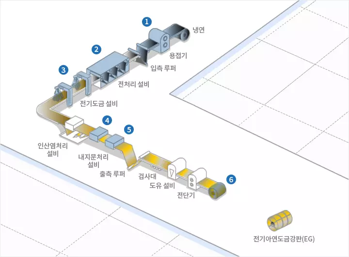
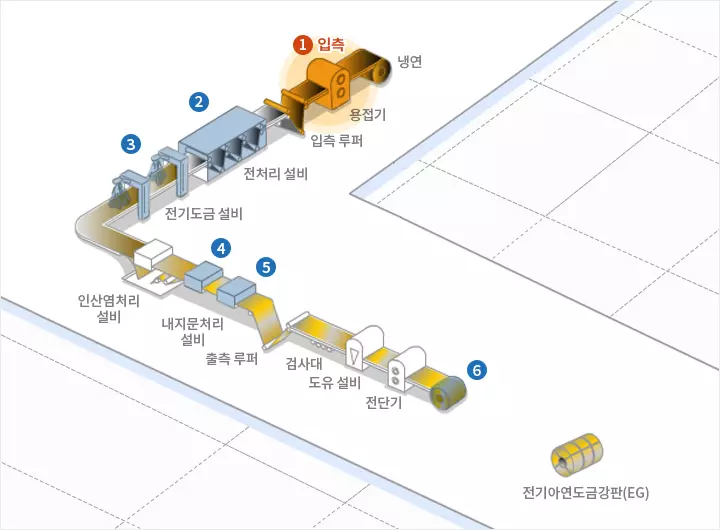
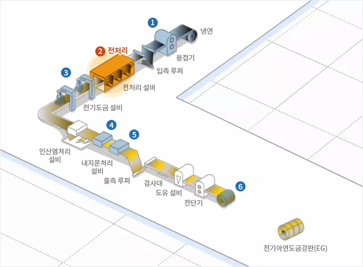
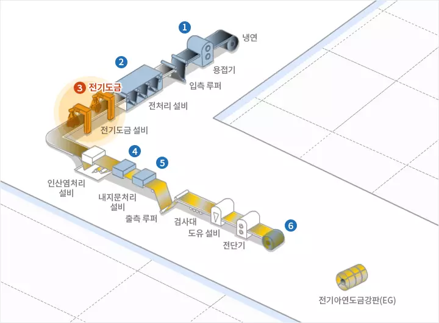
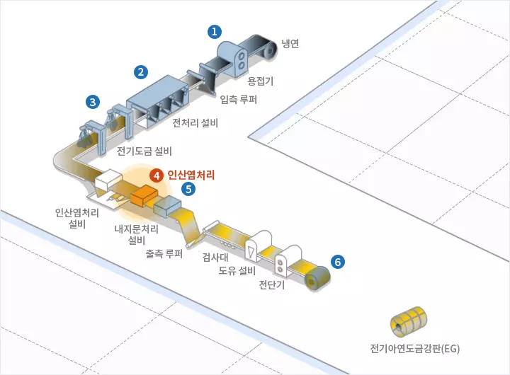
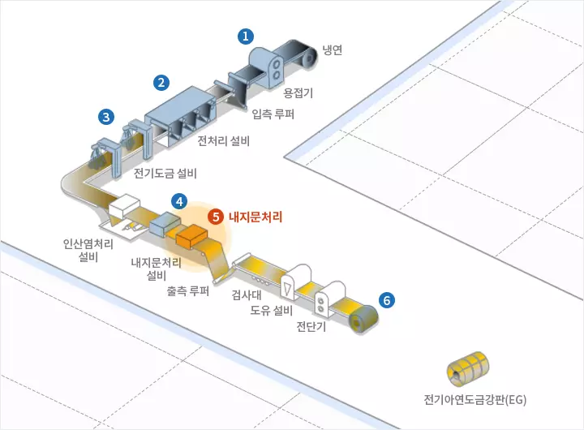
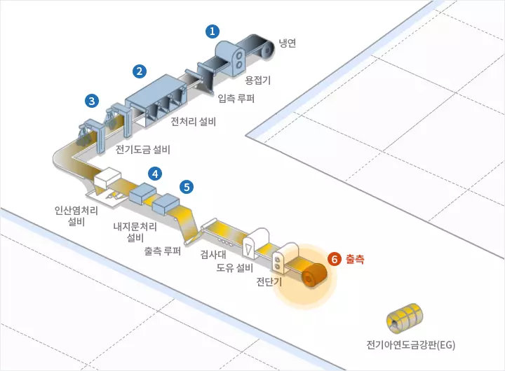

PRODUCTION
제조공정
제조공정
열연
냉연
용융아연도금
전기아연도금
>
전기아연도금
1.입측
전기도금라인 입측설비는 되풀림 장치(Pay Off Reel), 전단기, 용접기, 루퍼(Looper), 장력 조절장치 등입니다. 냉연소재를 운반, 장입하여 풀어주는 Pay Off Reel, 전후 코일을 자르고 연결시키는 전단기, 용접기, 루퍼와 평탄도를 제어하는 장력 조절장치 등으로 구성되어 있습니다
2.전처리
전기도금전에 스트립 표면의 오염을 제거하기 위한 전해청정, 산화피막 제거를 위한 전해탱크, 산세탱크, 린스(Rinse) 탱크로 구성되어 있습니다.
3.전기도금
전기도금방식 중 CAROSEL 방식은 도금작업시 컨덕터 롤에 의해 한 면씩 도금되며, 양면, 편차, 편면도금강판 등을 생산합니다. 또 수평형 방식은 수평으로 진행되는 강판에 양면이 동시에 도금이 되어 양면 도금강판을 생산합니다.
4.인산염처리
화학적 또는 전기화학적 반응을 통하여 아연층 표면에 인산염 피막을 만드는 공정으로, 일시방청, 도장하지용을 목적으로 하고 있습니다.
5.내지문처리
도금강판의 내식성을 보완하고 내지문성, 가공성등 제품 사용 용도에 적합한 특성을 부여하기 위하여 유기물, 무기물 또는 유무기복합 수지피막을 강판 표면에 도포하는 공정입니다.
6.출측
출측 루퍼(Looper) 및 텐션 릴(Tension Reel) 등으로 구성되며, 코일 권취 후 제품품질 보호를 위한 자동 포장 라인 등이 있습니다.






